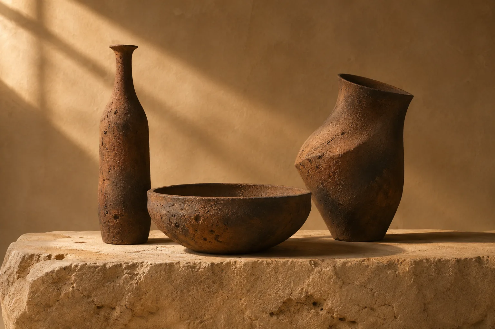
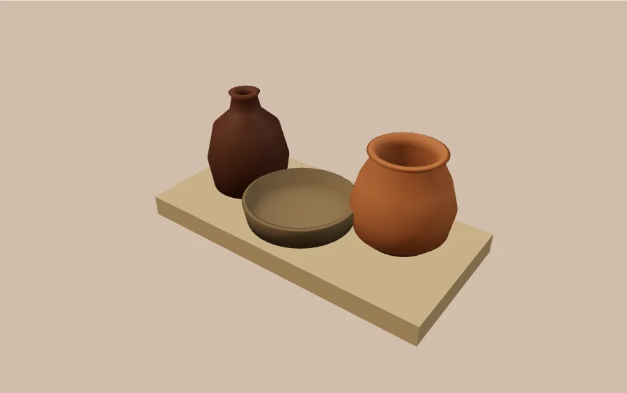

Ceramics studio
Earth,held still.
Three vessels from a single wood firing. Formed by hand, marked by flame.
Study the vessels
Three forms, one firing
Ash settles where the flame slows. The three pieces share a clay body, but each surface records its own place in the kiln.
Iron-rich stoneware · tall narrow mouth
A narrow neck holds the silhouette together. The dark shoulder catches a faint dust of ash.
Clay shrinkage calculator
Enter the finished dimension and the total shrinkage measured for your clay body.
3D model
Three thrown forms
